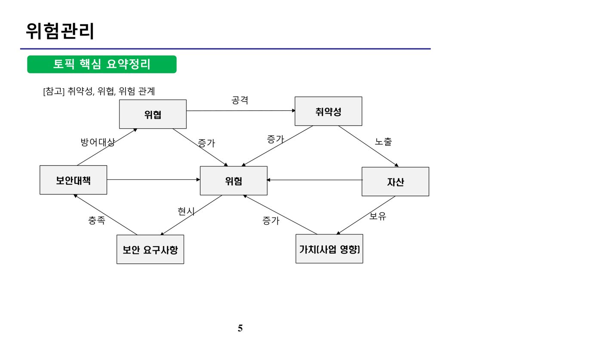
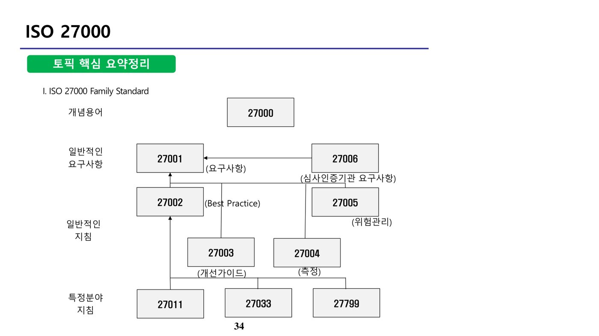

위험관리 (원본 p.2-16)
가. 위험관리(Risk Management)의 개요
위험관리는 정보자산에 내재된 위험을 식별·분석·평가하고, 이를 조직이 수용 가능한 수준으로 낮추기 위한 대책을 선정·시행하는 일련의 활동이다.
▸ 원본 p.2 표: 위험관리
| 용어 | 설명 |
|---|---|
| 위험(Risk) | 예상되는 위협에 의해 자산에 발생할 가능성이 있는 손실 기대치 |
| 위협(Threat) | 취약점을 이용하여 보안에 침해와 위해를 가할 수 있는 환경 |
| 취약점(Vulnerability) | 관리적, 기술적, 물리적 약점 |
나. 위험 분석 방법(정성적 vs 정량적)
▸ 원본 p.3 표: 위험관리
| 구분 | 설명 |
|---|---|
| 정성적 | 위험이 발생할 확률과 영향을 단계(높음/중간/낮음 등)나 가중치 등으로 평가하는 방법 - 델파이법, 시나리오법, 순위결정법 등 |
| 정량적 | 위험의 영향을 구체적인 수치로 나타내는 방법 - ALE(연간 예상 손실), 과거자료 분석, 수학공식, 확률 분포 등 |
다. 위험관리 계획 수립 및 위험처리 전략
▸ 원본 p.4 표: 위험관리
| 대책 | 설명 |
|---|---|
| 완화(Mitigation) | 위험을 허용 가능한 수준 이하로 낮추도록 통제 |
| 전가(Transference) | 보험 또는 외부기관을 통해 위험이 발생하는 경우 대응 주체를 이전 - 발생 가능성은 낮지만 피해가 큰 경우 |
| 회피(Avoidance) | 위험이 너무 커서 계획을 변경하여 발생 가능성을 차단 |
| 수용(Acceptance) | 모든 위험을 제거할 수 없으므로 대책을 별도로 마련하지 않음 |
[참고] 취약성·위협·위험의 관계

업무연속성 계획 (원본 p.17-26)
가. 업무연속성계획(BCP) 5단계 방법론
▸ 원본 p.16 표: 업무연속성 계획
| 단계 | 설명 |
|---|---|
| 범위 설정, 기획 | 프로젝트 계획 수립 단계 |
| 사업영향평가 | Business Impact Analysis, 사업단위가 비상 상태에 받게 될 재정적 손실의 영향도 파악 |
| 복구전략개발 | Time-critical한 사업기능을 지원하는 데 필요한 복구자원 추정 |
| 복구계획수립 | 효과적인 복구 수행을 위한 계획 수립 |
| 수행테스트, 유지보수 | 향후에 수행할 엄격한 테스트 및 유지보수 관리 절차 수립 |
나. 재난복구계획(DRP)과 백업 사이트 유형
▸ 원본 p.17 표: 업무연속성 계획
| 종류 | 설명 |
|---|---|
| 미러 사이트(Mirror Site) | 전산센터와 동일한 시스템을 하나 더 설치하고 운영 - 복구 속도 가장 빠름 |
| 핫 사이트(Hot Site) | 핵심 업무는 재난 시 즉시 복구할 수 있도록 전산 센터와 동일한 설비와 자원 보유 |
| 웜 사이트(Warm Site) | 전산센터 대비 부분적으로 설비 보유 |
| 콜드 사이트(Cold Site) | 전산센터의 공간만 미리 준비, 장비는 보유하지 않음 - 다른 백업 설비 대비 비용이 가장 적게 듦 |
복구 속도 순서: Mirror > Hot > Warm > Cold
다. DRP 테스트 범위·강도 5단계
재난복구계획(DRP) 테스트는 범위와 강도에 따라 5단계로 구분되며, 강도가 낮은 순서는 다음과 같다.
Checklist > Structured Walk-through > Simulation(모의테스트) > Parallel test(실제 백업 장소 이용) > Full-interruption test(운영시스템 전면 중단 테스트)
CC인증 (원본 p.27-33)
가. CC인증(Common Criteria)의 개요
CC(Common Criteria for Information Technology Security Evaluation)는 IT 제품이나 특정 사이트의 정보시스템에 대해 정보보안 평가를 수행하기 위한 국제 표준 평가 기준으로, ISO/IEC 15408로 표준화되어 있다.
나. CC인증의 구성요소
- PP(보호프로파일, Protection Profile) : 사용자의 보안요구를 표현하기 위해 CC를 준용하여 작성된 것으로, 보안기능을 포함한 IT제품이 갖추어야 할 "보안요구사항 집합"
- ST(보안목표명세서, Security Target) : 개발자가 특정 IT제품(TOE)의 보안기능을 표현하기 위해 CC를 준용하여 작성한 것으로, 제품 평가를 위한 기초자료로 사용
- TOE(Target of Evaluation, 평가대상) : 설명서가 수반되는 SW, 펌웨어, HW의 집합
- 패키지 : 유용한 요구사항의 모음
▸ 원본 p.28 표: CC인증 문서 3부 구성
| 구성 | 설명 |
|---|---|
| 1부 - 소개 및 일반모델 | 용어정의, 보안성 평가개념 정의, PP(보호프로파일)/ST(보안목표명세서) 구조정의 |
| 2부 - 보안기능 요구사항(SFR) | 보안기능 요구사항 정의 및 해석 |
| 3부 - 보증요구사항(SAR) | 보증요구사항 및 평가등급 정의 |
다. 평가 보증 등급(EAL, Evaluation Assurance Level)
▸ 원본 p.29 표: CC인증
| 등급 | 설명 | 등급 | 설명 |
|---|---|---|---|
| EAL 0 | 부적절한 보증 | EAL 4 | 방법론적 설계, 시험, 검토 |
| EAL 1 | 기능 시험 | EAL 5 | 준정형적 설계 및 시험 |
| EAL 2 | 구조 시험 | EAL 6 | 준정형적 검증된 설계 및 시험 |
| EAL 3 | 방법론적 시험과 점검 | EAL 7 | 정형적 검증 |
ISO 27000 (원본 p.34-41)
가. ISO 27000 Family Standard 체계

나. ISO 27001 통제분야(Annex A)
▸ 원본 p.35-37 표: ISO 27000 (3개 표 통합)
| 통제분야 | 설명 |
|---|---|
| 정보보안정책 | 정보보호에 대한 경영방침과 지원사항을 제공 |
| 정보보안조직 | 정보보호에 대한 책임배정 |
| 인력자원보안 | 고용전/중/만료로 분류하여 사람에 대한 보안 실시 |
| 자산관리 | 조직 자산에 대한 적절한 보호책 유지 |
| 접근통제 | 정보에 대한 접근통제 실시 |
| 암호화 | 기밀성, 인증, 정보 무결성 보장을 위해 암호화의 적절하고 효과적인 사용 보장 |
| 물리적·환경적 보안 | 비인가된 접근, 손상과 사업장 및 정보에 대한 영향 방지 |
| 운영보안 | 정보처리설비의 정확하고 안전한 운영 보장 |
| 통신보안 | 네트워크 및 지원 정보처리시설의 안전한 통신 보장 |
| 시스템 취득, 개발, 유지보수 | 정보시스템에 보안이 수립됨을 보장 |
| 협력업체(공급자) 관리 | 협력업체가 접근 가능한 조직 내 정보보호 부문, 협력업체와의 계약에 따라 정보보안 및 서비스 제공에 합의된 수준 유지 |
| 보안사고관리 | 정보시스템 관련 보안사건에 대해 적절히 의사소통되고 대응책을 신속하게 수립 |
| 사업연속성관리 | 사업활동에 방해요소 완화, 주요 실패 및 재해 영향으로부터 주요 사업활동 보호 |
| 준거성 | 조직의 정보보호 정책이나 지침 준수 |
다. ISO/IEC 27004 측정 프레임워크와 ISMS 구현 요구사항
ISO/IEC 27004는 ISO/IEC 27001에서 요구하는 ISMS의 효과성을 평가하기 위한 측정 프레임워크를 다루는 표준이다. 한편 2013년 개정된 ISO/IEC 27001은 ISMS 구현을 위해 조직의 보안환경 분석, 최고경영층의 리더십, 위험관리 등 일곱 가지 사항을 요구하며, 컴플라이언스(준거성) 관리 자체는 이 일곱 가지 요구사항 항목으로 별도 명시되어 있지 않다.
정보보호 계획수립은 위험분석을 종료한 후 그 결과를 토대로 수립해야 하며, 정보보호 정책은 조직의 IT 정책 등과 일관성을 가져야 한다. 또한 정보보호 인식제고(Awareness) 활동은 정보보호 인력만이 아니라 조직 구성원 전체를 대상으로 수행해야 한다.
ISMS (원본 p.42-54)
가. 정보보호관리체계(ISMS)의 개요
정의 - 정보통신망의 안전성 확보를 위하여 수립·운영하고 있는 기술적·물리적 보호조치 등 종합적인 관리체계에 대한 인증제도
인증 대상 - 매출액 또는 세입이 1,500억원 이상인 업체, 정보통신서비스부문 전년도 매출액 100억원 이상 또는 3개월간 일평균 100만명 이용자 이상인 사업자, 상급종합병원, 재학생수 1만명 이상인 학교(대학교, 산업대학, 교육대학 등)
심사 기준 - 총 104개 항목, 253개 세부 통제항목 준수 필요 - 관리과정 5단계 12개 통제항목 + 보호대책 13개 분야 92개 통제항목
나. 세부 심사기준(인증 분야별 인증 기준)
▸ 원본 p.43-44 표: ISMS (2개 표 통합)
| 인증 분야 | 인증 기준 |
|---|---|
| 1. 관리과정 | ① 정보보호정책 수립 및 범위설정 |
| ② 경영진 책임 및 조직 구성 | |
| ③ 위험관리 | |
| ④ 정보보호대책 구현 | |
| ⑤ 사후관리 | |
| 2. 정보보호대책 | ① 정보보호정책 |
| ② 정보보호조직 | |
| ③ 외부자 보안 | |
| ④ 정보자산 분류 | |
| ⑤ 정보보호 교육 | |
| ⑥ 인적 보안 | |
| ⑦ 물리적 보안 | |
| ⑧ 시스템개발 보안 | |
| ⑨ 암호 통제 | |
| ⑩ 접근 통제 | |
| ⑪ 운영보안 | |
| ⑫ 침해사고 관리 | |
| ⑬ IT재해복구 |
심사 기준(통제분야 대분류)은 "정보보호 관리과정"과 "정보보호 대책" 두 축으로 구성되며, "문서화"는 관리과정 전반에 요구되는 성격이지만 "정보보호 예산 규모"는 통제분야 대분류에 포함되지 않는다.
다. 사후관리 세부 관리과정
"사후관리" 과정에는 법적요구사항 준수검토, 정보보호관리체계 운영현황관리, 내부감사가 세부 관리과정으로 포함된다. 관리체계를 운영하는 과정에서 상시적인 모니터링을 수행하고, 정기적인 내부감사를 통해 정책 준수 상황을 확인하며, 관리체계를 재검토하여 개선하는 것이 이 단계의 핵심이다.
라. ISMS와 위험관리의 관계
취약성은 자산의 잠재적 속성으로서 위협의 이용 대상으로 정의된다. 정보보호대책이란 위험에 대응하여 자산을 보호하기 위한 관리적, 물리적, 기술적 대책을 의미한다. 관리체계 인증기준과 기업 내 현재 보호대책 적용 현황과의 수준 차이를 파악하는 활동은 위협분석이 아니라 갭(Gap) 분석이다. 정보보호관리체계 구축을 위한 수행조직은 프로젝트팀으로 구성될 수 있으며, 우선적으로 관리체계 도입 배경과 경영진을 이해시키고 설득할 수 있는 자료 등을 준비한다.
📚 전체 기출·예상문제 (24문항) — 원문 수록
본 강좌 원본 PDF에 수록된 기출·예상문제를 문항별로 재구성했습니다. 원본에는 한 페이지에 서로 다른 문제가 뒤섞여 추출되어 있던 부분을 분리했으며, 문항별 정답은 원문의 O/X 해설과 대조하여 검증했습니다.